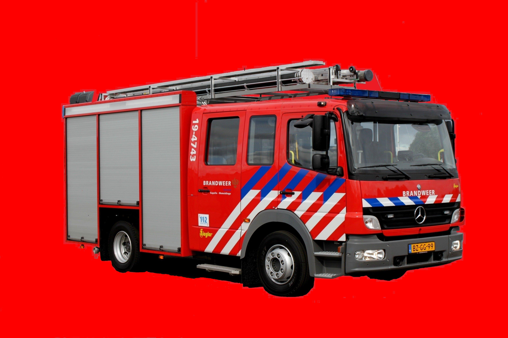
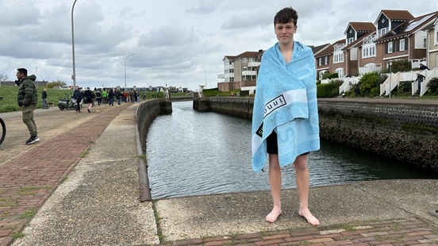

 De brandweer in Wemeldinge werd vanmiddag ingezet omdat er een vermoeden was dat er brand zou zijn in de Wilhelminastraat. In zorgcentrum De Wemel stond namelijk rook. De melding kwam rond 15.35 uur binnen bij de meldkamer. De brandweer werd daarom direct naar de Wilhelminastraat gestuurd om te kijken of er daadwerkelijk brand was. Toen de brandweerlieden onderzochten waar de rook vandaan kwam, kwamen ze tot de conclusie dat er een rookbom was afgestoken in een fietsenhok in de buurt van zorgcomplex De Wemel. De rook was het gebouw ingewaaid. De brandweer heeft het gebouw nog wel gecontroleerd, maar heeft verder niks hoeven te blussen.
 Bijna 1.300 handtekeningen om te kunnen blijven zwemmen in de oude sluis van Wemeldinge. Die hebben Boef en zijn vrienden verzameld, omdat de gemeente Kapelle besloten heeft om het te verbieden. Het ging niet helemaal zoals we wilden. Ze zijn nog niet helemaal tevreden na het gesprek met de burgemeester, want het verbod is niet van tafel. Hij gaat kijken wat hij voor ons kan doen, zegt Boef. Ze hebben het samen met de burgemeester gehad over alternatieven voor het springen in de sluis. Bijvoorbeeld een ponton in de haven waar we vanaf kunnen springen, maar wij willen gewoon in de sluis blijven.